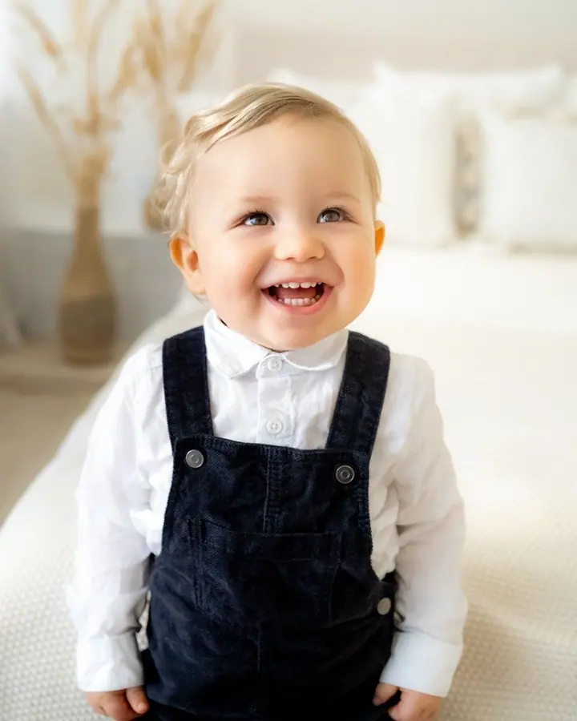
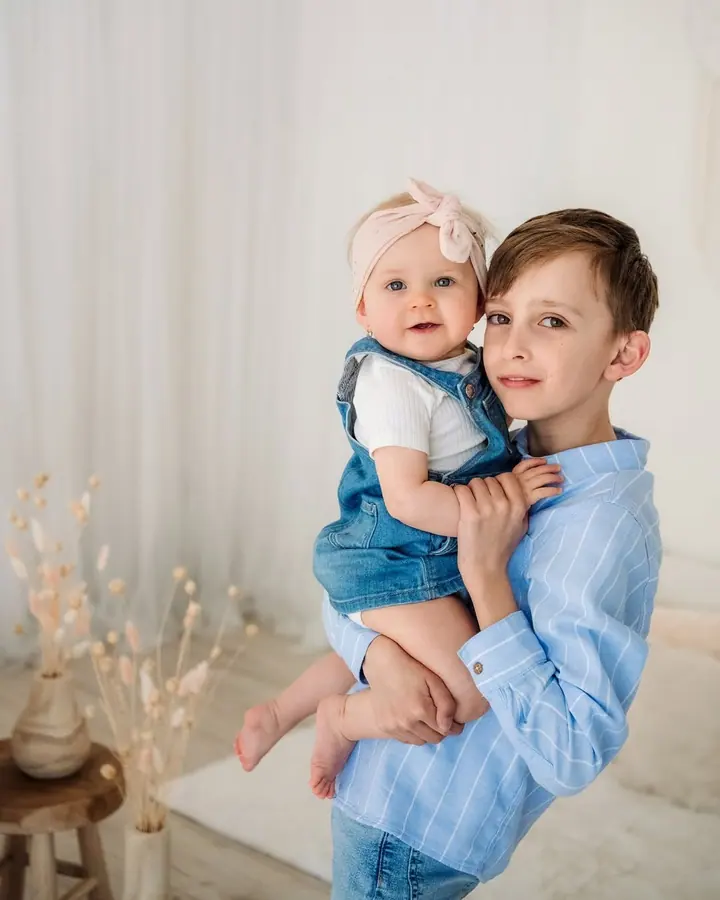
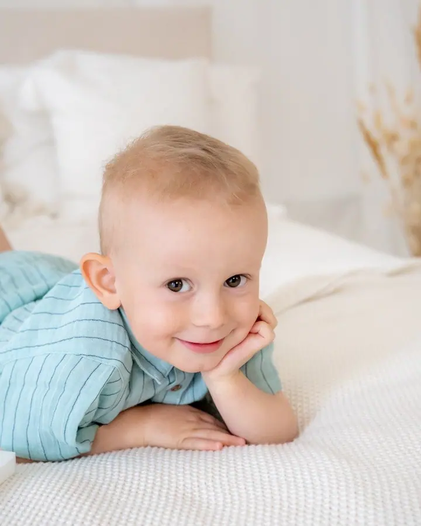
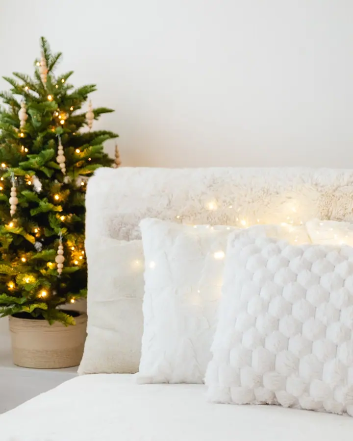
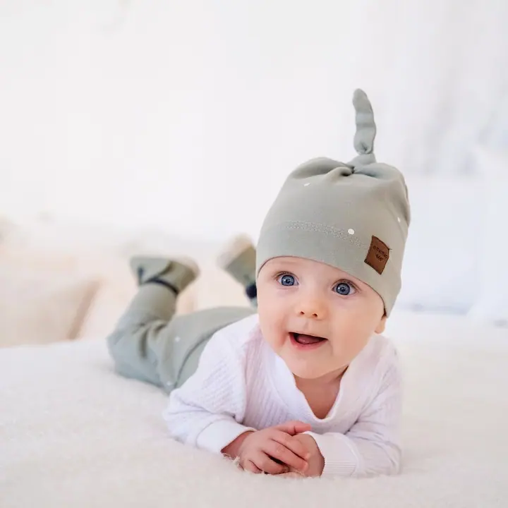
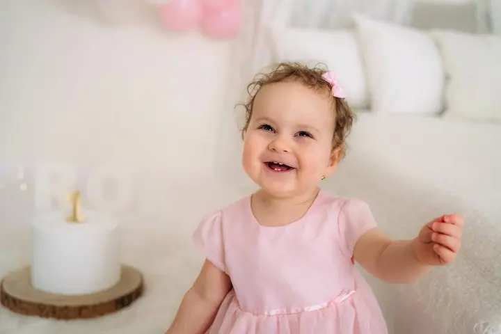

Vánoční focení
Půlhodinové focení ve vánoční scéně v mém studiu v Blansku. Dostanete 5 upravených fotografií a další si můžete vybrat podle chuti.





Jmenuji se Ema Janků a ve svém foto•studiu v Blansku fotím děti, celé rodiny a nastávající maminky. Ve studiu s přirozeným světlem i venku v okolí Doubravice spolu vytvoříme jemné, světlé a přirozené fotografie, ke kterým se budete rádi vracet.
Více o mně
„Ze všeho nejvíc dejte při výběru oblečení na svůj dobrý pocit.“
— Ema Janků
Půlhodinové focení ve vánoční scéně v mém studiu v Blansku. Dostanete 5 upravených fotografií a další si můžete vybrat podle chuti.
20 až 40 minut focení ve studiu s přirozeným světlem, nebo venku v okolí Doubravice. Společně vytvoříme jemné, světlé a přirozené fotografie vaší rodiny.
Klidné focení pro nastávající maminky ve studiu nebo v přírodě. Na fotkách zůstane čas, kdy se na miminko těšíte.
Přirozené lifestylové fotky vašeho miminka, na které máme ve studiu 1 až 3 hodiny. Focení novorozeňátek domlouvám individuálně.
Moje foto•studio najdete v Blansku na Bezručově ulici, v prvním patře hned první dveře vlevo. Je minimalistické a nadčasové, plné přirozeného světla a hlavně pohodlné. Takové, aby se v něm dobře cítily děti, rodiče i domácí mazlíčci, kteří jsou u mě vždycky vítáni.
Když je venku hezky, vyrazíme spolu do přírody v okolí Doubravice. Fotím děti, rodiny, páry a nastávající maminky, a ve studiu také miminka a narozeninová focení. Každý rok navíc chystám vánoční scénu, ve které vzniká vánoční focení pro celou rodinu.
Na focení se nemusíte dlouho chystat. Poradím vám, co si vzít na sebe, aby fotky působily jednotně a nadčasově, ale ze všeho nejvíc mi záleží na tom, abyste se cítili dobře.
V rezervačním systému si vyberete termín a čas a vyplníte krátký formulář. Focení miminek a v přírodě domlouvám individuálně, stačí mi napsat.
Pošlu vám tipy, co na sebe. Nejlépe vypadá jednoduché oblečení v jemných, neutrálních barvách, sladěné tón v tónu.
Ve studiu nebo v přírodě máme 20 až 40 minut. Fotíme nejčastěji naboso, v klidu a bez spěchu.
Do 7 dnů vám pošlu náhledy a vy si vyberete ty nejoblíbenější. Upravené fotografie dostanete do 4 týdnů v online galerii.
Focení dětí, rodin, párů a nastávajících maminek stojí 2 400 Kč, při platbě předem 2 200 Kč. V ceně je 6 upravených fotografií, každá další stojí 200 Kč.
Vyberete si některý z náhradních termínů, nebo vám vystavím dárkový poukaz. Můžete ho využít později v průběhu roku nebo s ním udělat radost svým blízkým.
Doporučuji jednoduché, nadčasové oblečení v jemných a neutrálních barvách, bez velkých obrázků a nápisů. Oblečení celé rodiny je dobré sladit do jednoho stylu.
Určitě. Domácí mazlíčci jsou ve studiu vítáni a na rodinných fotkách k vám prostě patří.
fotografka@emajanku.cz
Blansko · Doubravice nad Svitavou